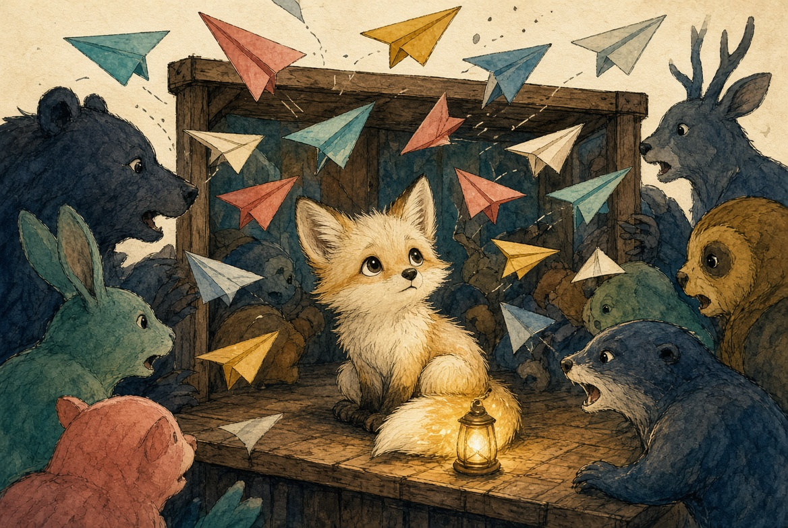
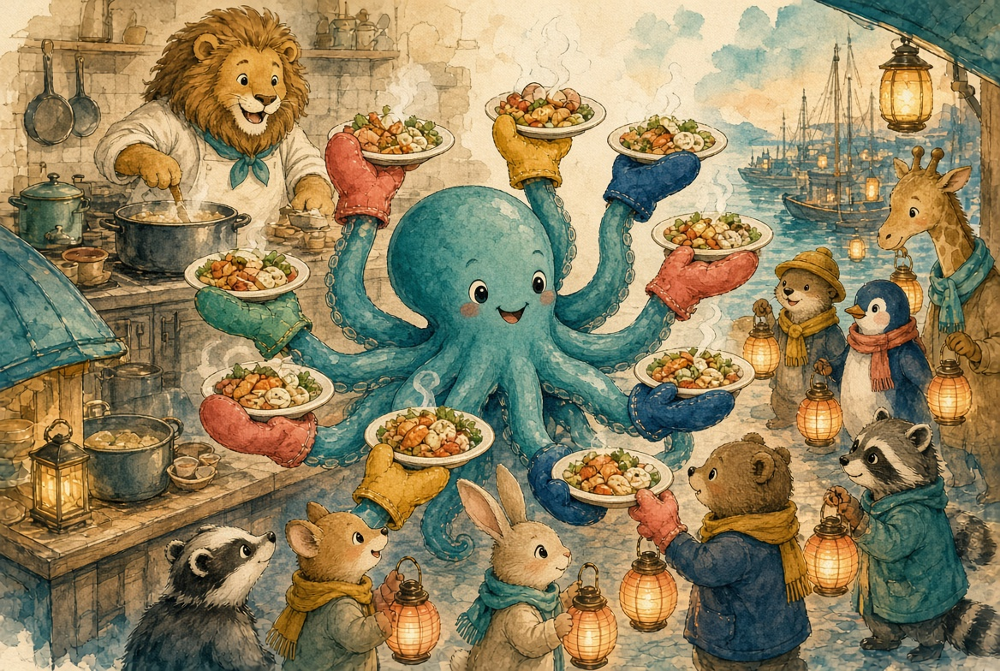
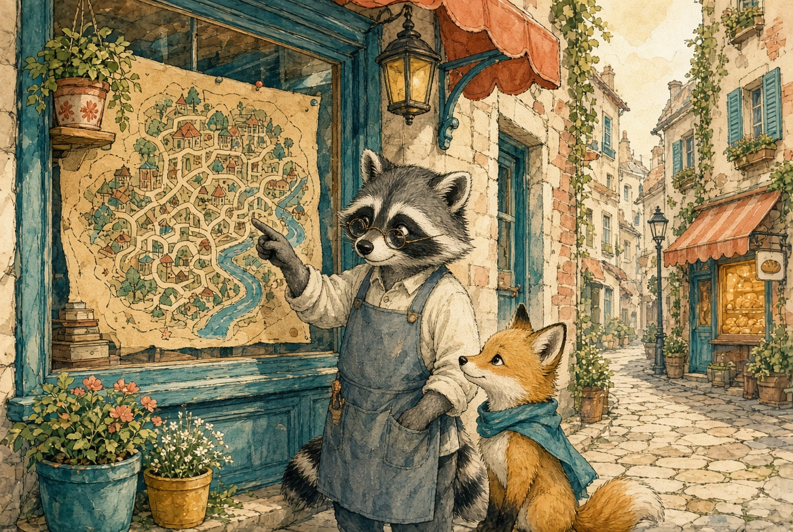
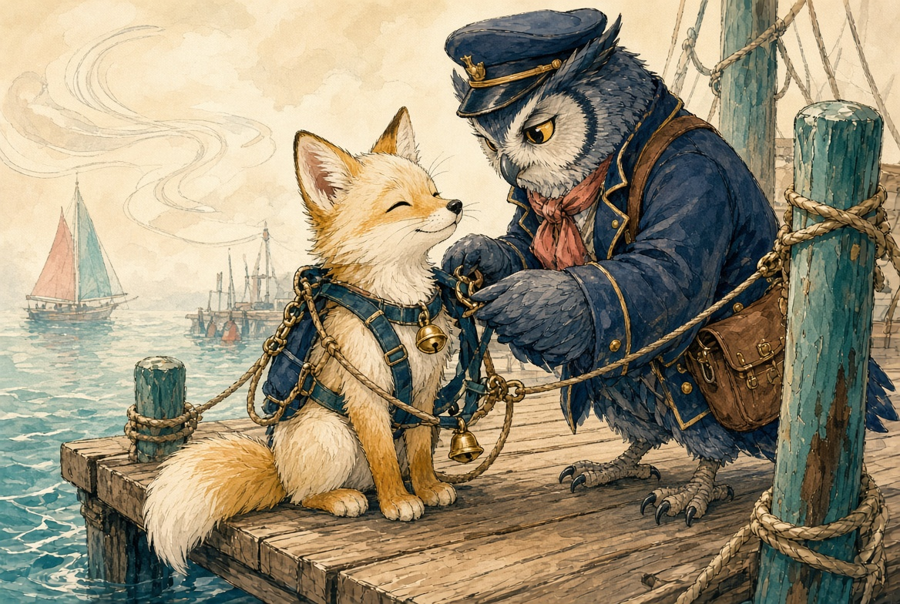
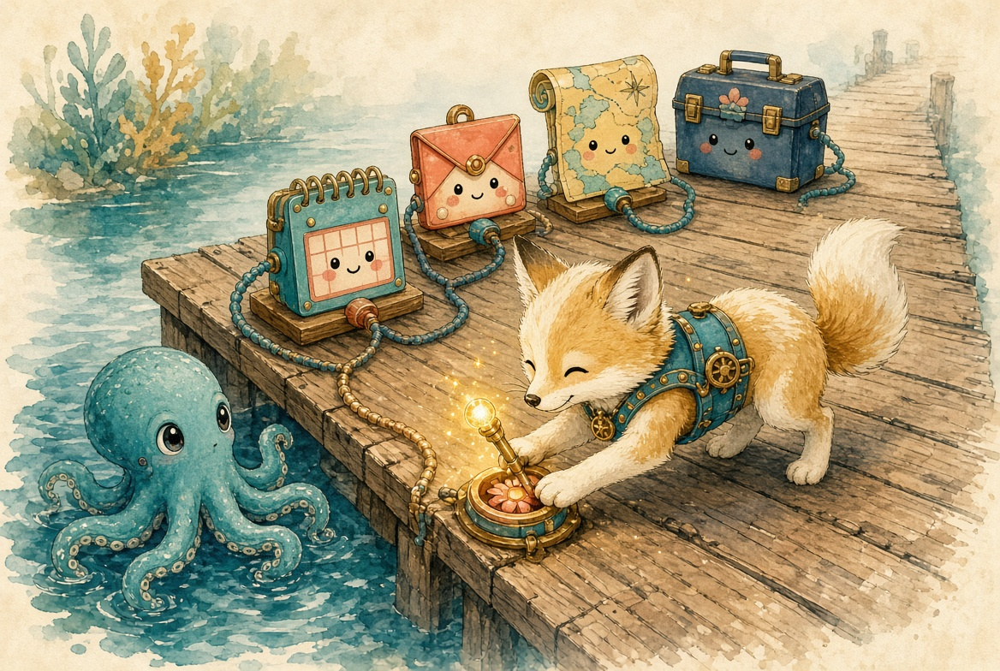
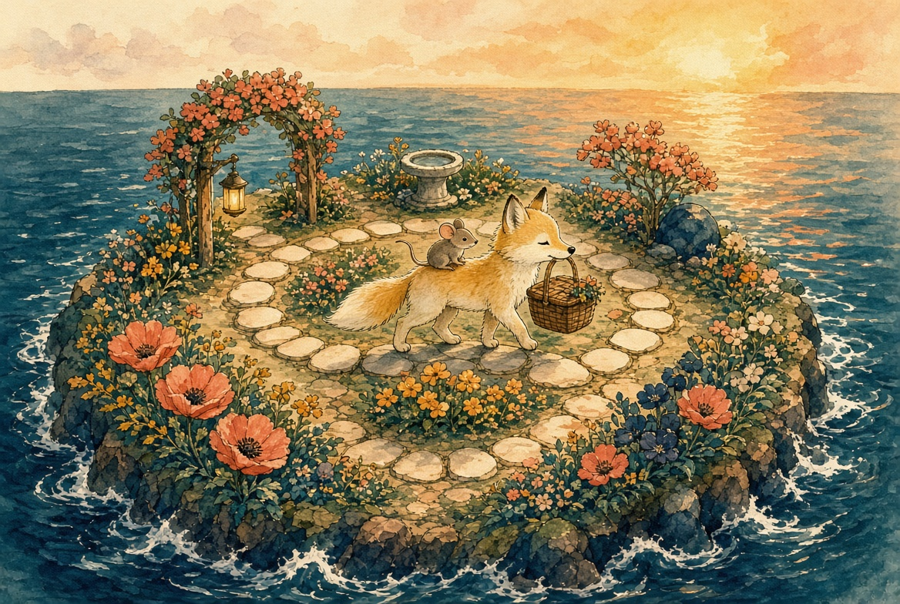
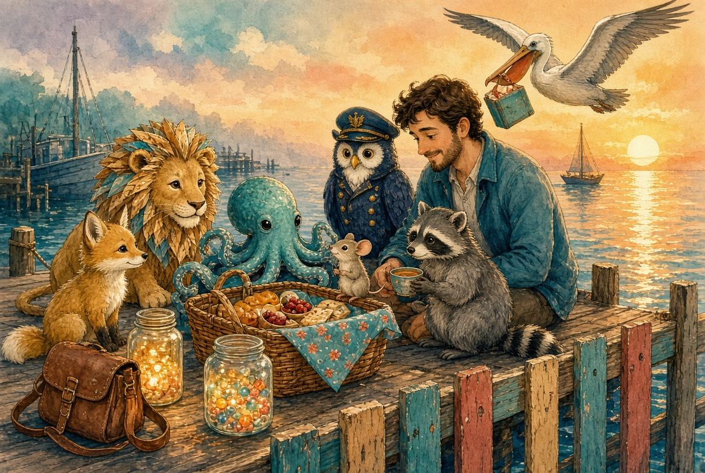

A simple map for a noisy field
For the professionals and leaders who have to explain AI in a room where half the people are certain and the other half are lost — and for anyone who needs a shared language without a research paper.
This book is about using AI, not building or training models. The story is a vehicle. The panels are the brief.
Once upon a time…

Once upon a time there was a little question named Luma. She was a simple question. She had one wish and a tiny lantern of curiosity.
She lived in a crowded chat booth, where answers arrived like paper airplanes… and then blew away. Every time Luma came back, nobody remembered her. The booth could talk. It could not do.
Luma wished for a place where questions could grow into work.
A chat box answers once and forgets. A working AI system keeps context, uses tools, and turns a request into finished work — a plan, a file, a booked event, a checked list.
The Folded Note — Prompts
Before Luma met the lion, Captain Context sat her down at a desk of paper airplanes. “The ask is the first tool,” said the captain. “A crumpled note gets a crumpled day. A well-folded note names the job, the audience, the constraints, and what done looks like.”
Luma folded one glowing airplane: picnic for four, no nuts, ready by sunset, include a shopping list.
A prompt is the instruction you give a model. Prompt engineering is the craft of writing that instruction so the job, constraints, format, and definition of done are unmistakable. It is still the cheapest lever in the harbor — and it is not the last one.
The Great Library Lion — LLM
A vast, gentle lion padded out of a library the size of a mountain. His mane was made of pages. “I am Leo,” he said. “I am a Large Language Model. I have read so many stories that I can help you start almost any one.”
Luma asked for a picnic plan. Leo wrote a beautiful plan. Then he sat very still. The plan was words. The picnic was not packed.
A general-purpose thinking engine that reads your words and writes useful words back. Wonderful at explaining, drafting, summarizing, and planning. By itself it does not fetch your calendar, open your files, or pack the sandwiches.
The Busy Serving Kitchen — vLLM

Behind Leo’s library was a kitchen that never slept. An octopus named Vee wore eight oven mitts and danced between stoves. “Leo is the cook,” said Vee. “I am the serving kitchen. When many questions arrive at once, I line them up, share the ovens fairly, and send answers out hot.”
Software that serves large models quickly. It batches many requests together and manages memory so one model can help lots of people at once. The model is the cook. vLLM is the busy restaurant kitchen.
The Pocket Mouse — SLM
A mouse popped from Luma’s pocket. “I’m Scout,” she squeaked. “I don’t know every story in the mountain. I know enough for the path right here. I run on a little lamp. I am quick. I am quiet. I can work when the mountain library is far away.”
Some jobs needed the lion. Some jobs needed the mouse.
A compact model that uses less power and memory. Often runs on a laptop or phone. Best at focused everyday tasks. Choose an SLM when “good, fast, and nearby” beats “enormous and far away.”
The Neighborhood Shopkeeper — SDM

On a side street stood a tiny shop with one perfect window. A raccoon named Dom sold only maps of this neighborhood. “I am a Specialized Domain Model,” said Dom. “I do not bake cakes. I do not sail ships. Ask me which alley has the bakery, and I will not guess.”
A model trained or tuned for one kind of work — medicine notes, legal clauses, warehouse codes, one company’s voice. Narrow on purpose. Sharp on purpose.
The Backpack — Agents
“Talking is only the first step,” said Captain Context at the harbor. He buckled a backpack onto Luma. Inside were tools: a key, a pencil, a looking-glass, a tiny boat. “An agent does not only answer,” said the captain. “An agent acts.”
Luma stood taller. She was still a question. Now she was a question that could work.
A model wrapped in permission to use tools. It plans a step, does the step, sees what happened, and continues until the job is done — or until it must ask a human.
The Recipe Shelf — Skills
In the harbor workshop stood a shelf of slim folders. Each folder had a name on the spine. “These are Skills,” said Scout. “You do not memorize every recipe. You open the right folder when the job matches.”
Reusable playbooks for agents — short instructions, checklists, and sometimes little scripts. The agent loads a skill when the task matches, instead of inventing the procedure from scratch every time.
The Safety Rigging — Harnesses

“This is the Harness,” said the captain. “It holds your tools. It watches your steps. It keeps notes. It stops you at the cliff edge. The lion is strong. The harness keeps the strength useful.”
The runtime around an agent: the loop runner, tool permissions, logs, tests, memory, budgets, and stop rules. A model without a harness is a conversation. A model with a harness can finish work.
The Universal Dock — MCP

Along the pier were sockets of every color. A calendar plug. A mailbox plug. A map plug. A toolbox plug. A sign read: MCP — Model Context Protocol. “Before MCP,” said Vee, “every tool spoke a private language. Now a dock is a dock.”
An open standard that lets models talk to tools and data sources through one kind of connection. Instead of a custom adapter for every app, an MCP server offers tools and resources in a shared shape.
The Garden Path — Loops

Behind the workshop was a round garden path with four stones: THINK · ACT · LOOK · AGAIN. Luma walked it with her picnic. Around and around — not forever — until the basket was ready.
The heartbeat of an agent. The model reasons, calls a tool, observes the result, and decides the next step. Loop engineering is deciding when to continue, when to retry, when to ask a person, and when to stop.
Other Friends at the Harbor
Context window
Luma’s satchel. It only holds so many pages at once.
Memory
Jars of glowing beads. Some last an afternoon. Some last seasons.
RAG
A pelican librarian fetches the exact page and drops it in the satchel.
Tools
Skills teach how. Tools do.
Guardrails
A painted fence along the cliff. Kind, firm, not optional.
Human-in-the-loop
For big choices, Luma waves. A person waves back.
Multi-agent work
Other lanterns with their own backpacks, splitting the job.
Context engineering
Choosing what rides with the ask: examples, files, history, retrieved pages.
Fog, Fences, and Checklists
Hallucinations
When Leo invents a bakery that is not there. Fluent is not the same as true.
Grounding
Tying answers to fetched pages, tools, and systems of record.
Evals
A checklist for the picnic. Did it pack what we asked? Can we measure that?
Routing
Mountain jobs to Leo. Pocket jobs to Scout. Alley jobs to Dom.
Workflows
A fixed path of steps. An agent wanders the loop. A workflow follows the recipe.
Tokens & cost
Every page in the satchel has a price. Long loops and big lions cost more.
Home

Together they packed the picnic. The folded note made the job clear. Leo helped with the poem. Vee served everyone quickly. Scout kept the list. Dom pointed to the bakery alley. Skills kept the order. The harness kept the path safe. MCP plugged in the calendar. The loop walked until the work was done.
Luma had found her harbor. And she lived usefully ever after.
Field Glossary
- Prompt
- The instruction given to a model — job, constraints, format, definition of done.
- Prompt engineering
- The craft of writing that instruction so it is hard to misread.
- Context engineering
- Choosing what else rides with the prompt: files, history, retrieved facts.
- LLM
- Large Language Model — broad general reasoning and text generation.
- vLLM
- High-throughput engine for serving large models to many users at once.
- SLM
- Small Language Model — efficient, often on-device or low-cost.
- SDM
- Specialized Domain Model — narrow expert for one field or company.
- Agent
- Model + tools + loop that acts toward a goal, not only replies.
- Skill
- Reusable playbook an agent can load when the task matches.
- Harness
- Runtime around the agent: tools, memory, permissions, stop rules.
- MCP
- Model Context Protocol — a standard way to connect tools and data.
- Loop
- Reason → act → observe → decide. The agent’s control cycle.
- RAG
- Retrieval-Augmented Generation — fetch facts, then answer.
- Hallucination
- A fluent, confident answer that is not true.
- Grounding
- Tying answers to retrieved sources and live systems.
- Evals
- Tests that measure whether the system did the job.
- Routing
- Sending each job to the right size and kind of model.
- Workflow
- A fixed sequence of steps, as opposed to a free-roaming agent.
- Guardrails
- Policy and safety limits on what the system may do.
- Human-in-the-loop
- A person approves or steers high-impact steps.